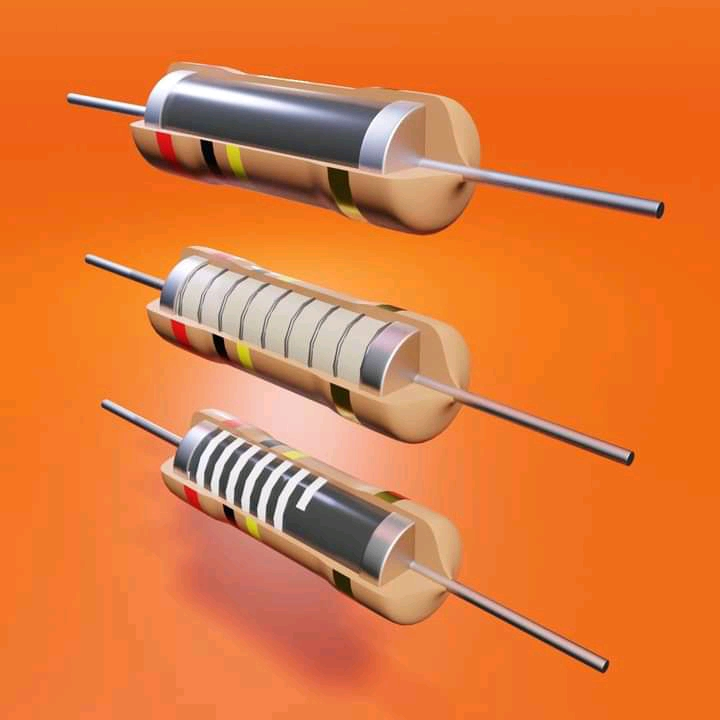

Os componentes eletrônicos são divididos em duas classes os passivos e ativos, vamos começar o nosso pequeno estudo pelos componentes chamados passivos.
O primeiro componente que iremos estudar chama-se resistor. Sua função é limitar o fluxo de corrente em um circuito, ou seja dificultar a passagem da correte elétrica. A unidade de medida da resistência elétrica é o Ohm, simbolizada por Ω. Os resistores mais comuns são os de carbono, utilizados nos aparelhos eletrônicos, como radios, DVDs, televisores são pequenos, com potências de 1/8W à 5 W, tipicamente. Em um esquema eletrônico identificamos o resistor pelo seu símbolo, independente da sua potência, material ou tamanho, lembrando que o resistor não tem polaridade. Abaixo você encontra as duas formas simbólicas para o resistor.
Possui polaridade e durante uma montagem ou substituição devemos estar atentos a esta polaridade. Os capacitores eletrolíticos vem com uma faixa lateral indicando o terminal negativo do capacitor, e esta polaridade deve ser respeitada na hora da montagem, caso contrário o circuito não funcionará e dependendo da tensão de trabalho o mesmo pode até estourar. Abaixo você encontra alguns modelos reais de capacitor eletrolíticos. Na grande maioria, tem sua capacidade medida em microfarad (µF). Outra especificação importante dos capacitores é a sua tensão de trabalho, ou seja, qual a tensão máxima que suportam.

continue assistindo e aprenda com Antonio Lungoge